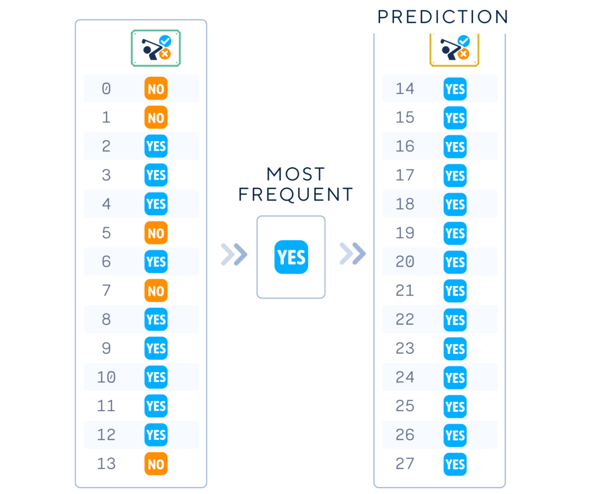

Have you ever wondered how data scientists measure the performance of their Machine Learning models? Enter the dummy classifier – a simple yet powerful tool in the world of data science. Think of it as the baseline player in a game, setting the minimum standard that other, more sophisticated models need to beat.
A dummy classifier is a simple machine learning model that makes predictions using basic rules, without actually learning from the input data. It serves as a baseline for comparing the performance of more complex models. The dummy classifier helps us understand if our sophisticated models are actually learning useful patterns or just guessing.
Throughout this article, we’ll use this simple artificial golf dataset (inspired by [1]) as an example. This dataset predicts whether a person will play golf based on weather conditions. It includes features like outlook, temperature, humidity, and wind, with the target variable being whether to play golf or not.
Columns: ‘Outlook’, ‘Temperature’, ‘Humidity’, ‘Wind’ and ‘Play’ (target feature)
# Import libraries
from sklearn.model_selection import train_test_split
import pandas as pd
# Make a dataset
dataset_dict = {
'Outlook': ['sunny', 'sunny', 'overcast', 'rain', 'rain', 'rain', 'overcast', 'sunny', 'sunny', 'rain', 'sunny', 'overcast', 'overcast', 'rain', 'sunny', 'overcast', 'rain', 'sunny', 'sunny', 'rain', 'overcast', 'rain', 'sunny', 'overcast', 'sunny', 'overcast', 'rain', 'overcast'],
'Temperature': [85.0, 80.0, 83.0, 70.0, 68.0, 65.0, 64.0, 72.0, 69.0, 75.0, 75.0, 72.0, 81.0, 71.0, 81.0, 74.0, 76.0, 78.0, 82.0, 67.0, 85.0, 73.0, 88.0, 77.0, 79.0, 80.0, 66.0, 84.0],
'Humidity': [85.0, 90.0, 78.0, 96.0, 80.0, 70.0, 65.0, 95.0, 70.0, 80.0, 70.0, 90.0, 75.0, 80.0, 88.0, 92.0, 85.0, 75.0, 92.0, 90.0, 85.0, 88.0, 65.0, 70.0, 60.0, 95.0, 70.0, 78.0],
'Wind': [False, True, False, False, False, True, True, False, False, False, True, True, False, True, True, False, False, True, False, True, True, False, True, False, False, True, False, False],
'Play': ['No', 'No', 'Yes', 'Yes', 'Yes', 'No', 'Yes', 'No', 'Yes', 'Yes', 'Yes', 'Yes', 'Yes', 'No', 'No', 'Yes', 'Yes', 'No', 'No', 'No', 'Yes', 'Yes', 'Yes', 'Yes', 'Yes', 'Yes', 'No', 'Yes']
}
df = pd.DataFrame(dataset_dict)
# One-hot Encode 'Outlook' Column
df = pd.get_dummies(df, columns=['Outlook'], prefix='', prefix_sep='', dtype=int)
# Convert 'Windy' (bool) and 'Play' (binary) Columns to 0 and 1
df['Wind'] = df['Wind'].astype(int)
df['Play'] = (df['Play'] == 'Yes').astype(int)
# Set feature matrix X and target vector y
X, y = df.drop(columns='Play'), df['Play']
# Split the data into training and testing sets
X_train, X_test, y_train, y_test = train_test_split(X, y, train_size=0.5, shuffle=False)
The dummy classifier operates on simple strategies to make predictions. These strategies don’t involve any actual learning from the data. Instead, they use basic rules like:
For our golf dataset, a dummy classifier might always predict "Yes" for playing golf if that’s the most common outcome in the training data.
The "training" process for a dummy classifier is quite simple and doesn’t involve the usual learning algorithms. Here’s a general outline:
Choose one of the following strategies:
Depends on the strategy, Dummy Classifier makes different prediction.
from sklearn.dummy import DummyClassifier # Choose a strategy for your DummyClassifier (e.g., 'most_frequent', 'stratified', etc.) strategy = 'most_frequent'
Collect the class labels from the training dataset to determine the strategy parameters.
The algorithm is simply getting information of the "Most Frequent" class in the training dataset – in this case "Yes".
# Initialize the DummyClassifier dummy_clf = DummyClassifier(strategy=strategy) # "Train" the DummyClassifier (although no real training happens) dummy_clf.fit(X_train, y_train)
Use the chosen strategy to generate a list of predicted labels for your test data.
If we choose the "most frequent" strategy and find that "Yes" (play golf) appears more often in our training data, the dummy classifier will simply remember to always predict "Yes".
# Use the DummyClassifier to make predictions
y_pred = dummy_clf.predict(X_test)
print("Label :",list(y_test))
print("Prediction:",list(y_pred))
Dummy classifier gives 64% accuracy as the baseline for future models.
# Evaluate the DummyClassifier's accuracy
from sklearn.metrics import accuracy_score
accuracy = accuracy_score(y_test, y_pred)
print(f"Dummy Classifier Accuracy: {accuracy.round(4)*100}%")
While dummy classifiers are simple, they do have a few important parameters:
1) Strategy: This determines how the classifier makes predictions. Common options include:
2) Random State: If using a strategy that involves randomness (like ‘stratified’ or ‘uniform’), this parameter ensures reproducibility of results.
3) Constant: When using the ‘constant’ strategy, this parameter specifies which class to always predict.
For our golf dataset, we might choose the ‘most_frequent’ strategy, which doesn’t require additional parameters.
Like any tool in machine learning, dummy classifiers have their strengths and limitations.
Understanding dummy classifiers is crucial for any data scientist or machine learning enthusiast. They serve as a reality check, helping us ensure that our more complex models are actually learning useful patterns from the data. As you continue your journey in machine learning, always remember to compare your models against these simple baselines – you might be surprised by what you learn!
# Import necessary libraries
import pandas as pd
import numpy as np
from sklearn.model_selection import train_test_split
from sklearn.metrics import accuracy_score
from sklearn.dummy import DummyClassifier
# Make dataset
dataset_dict = {
'Outlook': ['sunny', 'sunny', 'overcast', 'rain', 'rain', 'rain', 'overcast', 'sunny', 'sunny', 'rain', 'sunny', 'overcast', 'overcast', 'rain', 'sunny', 'overcast', 'rain', 'sunny', 'sunny', 'rain', 'overcast', 'rain', 'sunny', 'overcast', 'sunny', 'overcast', 'rain', 'overcast'],
'Temperature': [85.0, 80.0, 83.0, 70.0, 68.0, 65.0, 64.0, 72.0, 69.0, 75.0, 75.0, 72.0, 81.0, 71.0, 81.0, 74.0, 76.0, 78.0, 82.0, 67.0, 85.0, 73.0, 88.0, 77.0, 79.0, 80.0, 66.0, 84.0],
'Humidity': [85.0, 90.0, 78.0, 96.0, 80.0, 70.0, 65.0, 95.0, 70.0, 80.0, 70.0, 90.0, 75.0, 80.0, 88.0, 92.0, 85.0, 75.0, 92.0, 90.0, 85.0, 88.0, 65.0, 70.0, 60.0, 95.0, 70.0, 78.0],
'Wind': [False, True, False, False, False, True, True, False, False, False, True, True, False, True, True, False, False, True, False, True, True, False, True, False, False, True, False, False],
'Play': ['No', 'No', 'Yes', 'Yes', 'Yes', 'No', 'Yes', 'No', 'Yes', 'Yes', 'Yes', 'Yes', 'Yes', 'No', 'No', 'Yes', 'Yes', 'No', 'No', 'No', 'Yes', 'Yes', 'Yes', 'Yes', 'Yes', 'Yes', 'No', 'Yes']
}
df = pd.DataFrame(dataset_dict)
# Perform one-hot encoding on 'Outlook' column
df = pd.get_dummies(df, columns=['Outlook'], prefix='', prefix_sep='', dtype=int)
# Convert 'Wind' and 'Play' columns to binary indicators
df['Wind'] = df['Wind'].astype(int)
df['Play'] = (df['Play'] == 'Yes').astype(int)
# Split data into features (X) and target (y), then into training and test sets
X, y = df.drop(columns='Play'), df['Play']
X_train, X_test, y_train, y_test = train_test_split(X, y, train_size=0.5, shuffle=False)
# Initialize and train the dummy classifier model
dummy_clf = DummyClassifier(strategy='most_frequent')
dummy_clf.fit(X_train, y_train)
# Make predictions on the test data
y_pred = dummy_clf.predict(X_test)
# Calculate and print the model's accuracy on the test data
print(f"Accuracy: {accuracy_score(y_test, y_pred)*100:.4f}%")
Next